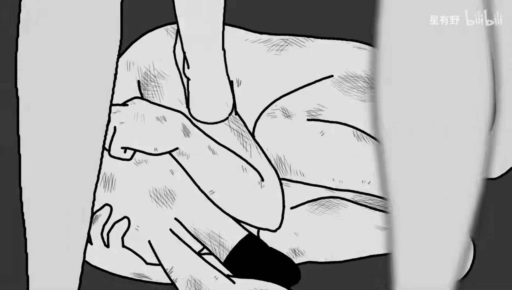

成年人的压力
1、工作紧张的压力。现代生活工作压力大，精神高度紧张，生活节奏快。成年人因长期处于高度紧张状态下，如果得不到及时的调适，会感觉身心疲惫。久而久之，则出现焦虑不安、抑郁症、精神障碍等心理问题和疾病。从生理角度讲，长期精神高度紧张也会使内分泌功能失调、人体免疫力下降而导致各种生理疾病的产生。
2、感情不和睦的压力。现代人离婚率越来越高，而离婚后的受损方，尤其是女性，往往经不起离婚的打击，造成身心的极大伤害。如得不到及时调适，极有可能因心理负荷过重而诱发心理疾病。一项调查表明，目前我国离婚人群中，因种种原因心理压力过大的约占70%，这类人需要寻找倾诉对象并应得到心理帮助。
3、生活压力。因为生活的贫困造成心理压力过大而诱发心理疾病的人群，主要为下岗职工和高校的贫困生。由于下岗，尤其是夫妻双下岗，其心理压力是巨大的，如果一时找不到合适的工作，极有可能导致心理疾病。
4、事业受挫的压力。在生意场上，现代人容易犯急功近利的毛病，为追求事业上的成功，往往是拼命地工作，不断自我加压，尽管超过了自身能力所及，仍是苛求自己，从而造成心有余而力不足，不能自我满足，导致心理失衡。经常失败或事业大起大落者，其心理因失败的打击长期处于一种失衡状态中，如果不能自我调适，极有可能诱发精神障碍、抑郁症、自闭症等心理疾病。
等等......
其实还有很多，这里就不一一例举，毕竟懂的都懂。
